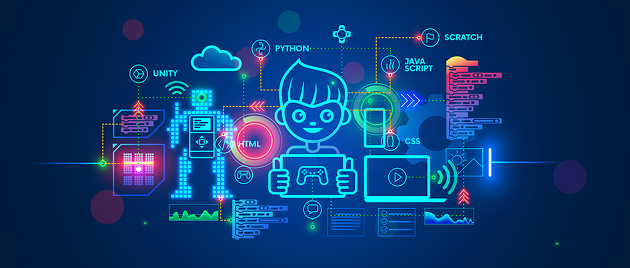

우리의 일상생활에서 사람이 하기 힘든일을 대신 실행 해 주는 것이 바로 코딩.

인공지능, 빅데이터, 사물인터넷 그리고 모바일 기술의 발전으로 언제 어디서나 디지털화된 정보를 공유하고 활용할 수 있는 시대가 도래 하였다.
4차 산업혁명 시대는 로봇이나 인공지능으로 무장한 컴퓨터와 인류가 협동하는 사회가 될 것이라고 전문가들은 말하고 있다.
또한, 기존의 독립적인 업무에 인공지능, 기계, 로봇 등이 접목되면서 이를 다룰 수 있는 창의성을 가진 인간이 중요한 역할을 할 것이라고 생각하고 있다.